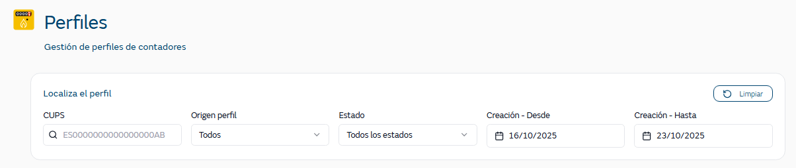
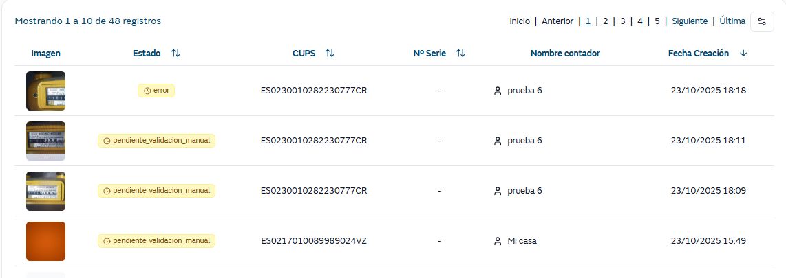

La pantalla de Perfiles permite visualizar los perfiles de contadores de gas que han sido procesados por el sistema YoLeoGas.
Su funcionamiento es equivalente a la pantalla de visualización de lecturas, cambiando el contenido funcional pero manteniendo una lógica de comportamiento similar para facilitar el trabajo del usuario.
Se pueden buscar los perfiles por:

CUPS → CUPS específico de 20 dígitos o código parcial. Se recomienda el uso de códigos completos para mejorar el rendimiento
Origen perfil → los valores posibles son
YoLeoGas, perfiles creados desde la app YoLeoGas
Operaciones. perfiles creados desde la app W&T
Todos
Estado → los valores posibles son: Pendiente validación, Validación manual, Procesado, Descartado, Todos lo estados
Creación Desde/Hasta: Rango de fechas desde / hasta con selector de calendario y periodo predefinido inicialmente de una semana. Se avisará al usuario si el rango de fechas seleccionado es amplio.
Tras informar los criterios, ya se realiza la consulta y la tabla de resultados se actualiza automáticamente.
En la tabla de resultados se muestra la siguiente información:

Imagen: Miniatura de la imagen del contador (100px)
Estado: Estado actual del procesamiento con tooltip de errores
CUPS: Código del punto de suministro
Nº Serie: Número de serie del contador
Nombre del contador: nombre del contador creado por el cliente.
Fecha Creación: Fecha y hora en la que se ha creado el perfil
A diferencia de la pantalla de lecturas, únicamente mostrará un registro por perfil. No mostrará todas las lecturas recibidas.
Existirá una opción para seleccionar los campos que se visualizan en el listado.
Al lanzar la búsqueda, se recuperan todas los registros de la entidad PROFILE que cumplen los filtros indicados, teniendo en cuenta que:
CUPS → se corresponde con prf_cups de la entidad PROFILE.
Origen perfil→ se corresponde con el campo prf_image_input_channel de la entidad PROFILE y la relación entres sus valores y los que se muestran es:
ENTIDAD PROFILE | ORIGEN EN PANTALLA |
MOBILE | YoLeoGas |
HERMES | Operaciones |
Estado → se corresponde con el campo prf_status_stage de la entidad PROFILE y la relación entre sus valores y los que se muestran es:
ENTIDAD PROFILE | ESTADO EN PANTALLA |
PENDING_SERVER_PROCESSING | Activo |
PENDING_IMAGE_PROCESSING | Activo |
PENDING_MANUAL_PROCESSING | Pendiente validación |
PROCESSED | Validado |
DISCARDED | Rechazado |
Fecha creación → se corresponde con prf_creation_date de la entidad PROFILE
Nº Serie → se corresponde con prf_meter_serial_value_server_id o prf_meter_serial_value_manual (si se ha informado) de la entidad PROFILE
Nombre contador → se corresponde con prf_name de la entidad PROFILE
En la pantalla, el usuario puede realizar las siguientes acciones:
Limpiar: Resetear todos los filtros
Paginación: Navegar entre páginas (Primera, Anterior, Siguiente, Última)
Ver imagen: Click para ver imagen completa
Modificación de columnas: Añadir / Eliminar campos a la visualización.